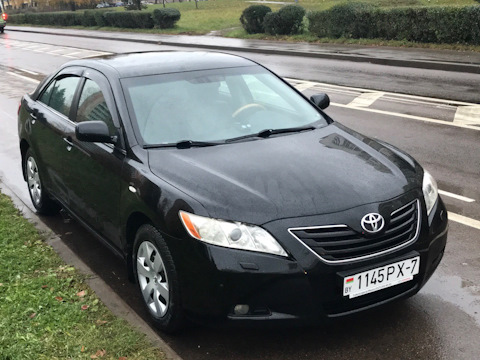
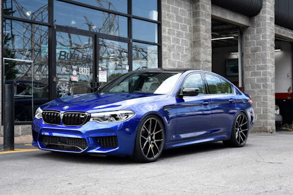

Toyota Camry v40 |
|
 |
Toyota Camry 3.5 The Toyota Camry (/ˈkæmri/; Japanese: トヨタ・カムリ Toyota Kamuri) is an automobile sold internationally by the Japanese manufacturer Toyota since 1982, spanning multiple generations.
Originally compact in size (narrow-body), later Camry models have grown to fit the mid-size classification (wide-body)—although the two sizes co-existed in the 1990s. Since the release of the wide-bodied versions, Camry has been extolled by Toyota as the firm's second "world car" after the Corolla. In Japan, Camry was once exclusive to Toyota Corolla Store retail dealerships. Narrow-body cars also spawned a rebadged sibling in Japan, the Toyota Vista (トヨタ・ビスタ)—also introduced in 1982 and sold at Toyota Vista Store locations. Diesel fuel versions have previously retailed at Toyota Diesel Store. |
BMW M5 F90 |
|
 |
The BMW M5 is a high performance variant of the BMW 5 Series marketed under the BMW M sub-brand. It is considered an iconic vehicle in the sports sedan category.
The majority of M5s have been produced in the sedan (saloon) body style, but in some countries the M5 was also available as a wagon (estate) from 1992 to 1995 and from 2006 to 2010. The first M5 model was hand-built in 1985 on the E28 535i chassis with a modified engine from the M1 that made it the fastest production sedan at the time.M5 models have been produced for every generation of the 5 Series since 1985. |